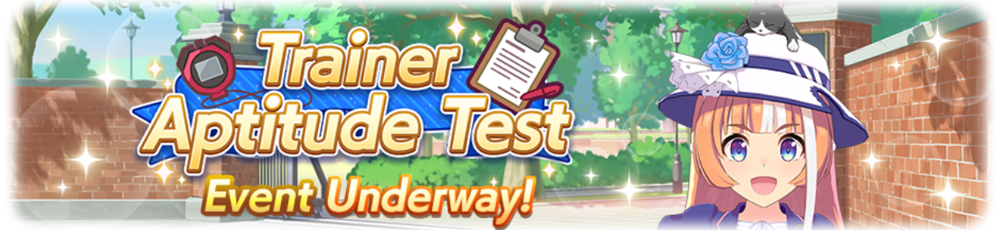

The Aptitude Test is a new event in Umamusume Pretty Derby that has you completing a set of tasks in order to get points and earn a high score. Learn more about the Trainer Aptitude Test and what rewards to prioritize.
Your goal in the Trainer Aptitude Test is to get as many points as possible. This means you'll have to meet the stat requirements and win several races to get a better chance at getting an A. Focus on meeting these goals and don't worry if the end result isn't optimal. You can see how it works through the following sheet: The top 30 Umamusume who got the highest scores during the event will show up in the borrow list and can be borrowed an unlimited number of times! You can use them to your advantage so your Umamusume can gain an upperhand with better sparks and skills.Event rewards
The point reward system
Free Course Score Evaluation
C
B
A
15,000
20,000
28,000
Races Won Points
G1 Races 100 Points G2 Races 70 Points G3 Races 50 Points OP Races 20 Points
Skill and Points
Normal Skills 400 Points Rare Skills 1,200 Points
Attribute Score Points
Speed - 1000 or above 1,500 Points Stamina - 1000 or above 1,500 Points Power - 1000 or above 1,500 Points Guts - 1000 or above 1,500 Points Wit - 1000 or above 1,500 Points
Career Scenario
1 TS Climax Win 500 Points 2 TS Climax Win 1,000 Points TS Climax Winner 1,500 Points Event bonuses
Top 30 Umamusume Can Be Borrowed!
Current events!
“Trainer Aptitude Test” is here!
